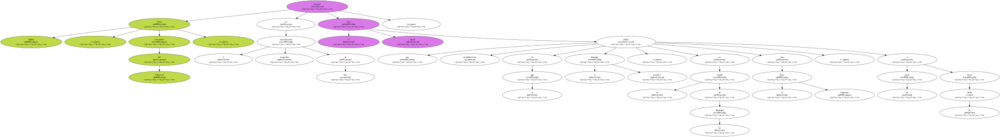
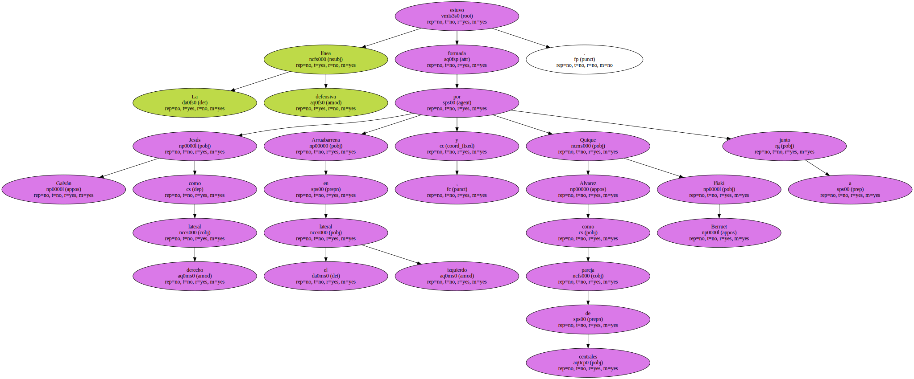
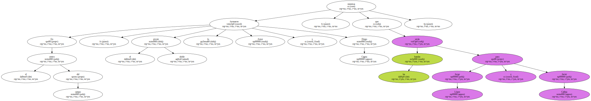
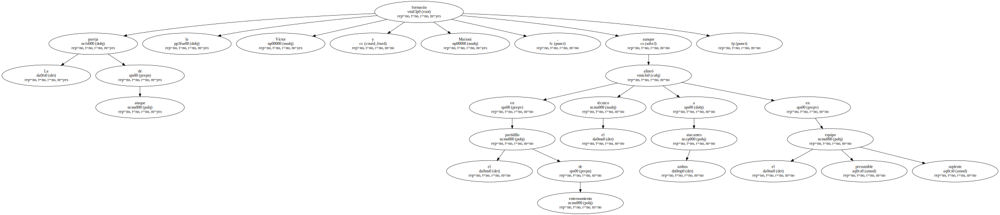
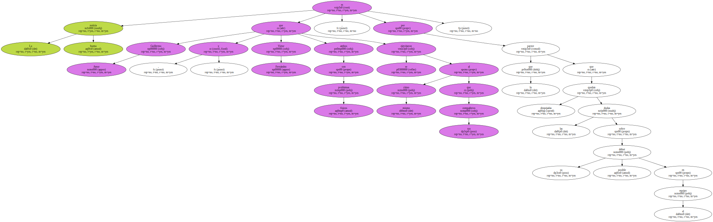

Víctor Muñoz , entrenador del Villarreal , mostró en el entrenamiento vespertino de hoy el once inicial que probablemente debute en la liga el próximo domingo , en el estadio de El Madrigal ante el Rayo Vallecano , a partir de las 20:00 horas.
Víctor Muñoz , entrenador del Villarreal , mostró en el entrenamiento vespertino de hoy el once inicial que probablemente debute en la liga el próximo domingo , en el estadio de El Madrigal ante el Rayo Vallecano , a partir de las 20:00 horas.

Víctor Muñoz , entrenador del Villarreal , mostró en el entrenamiento vespertino de hoy el once inicial que probablemente debute en la liga el próximo domingo , en el estadio de El Madrigal ante el Rayo Vallecano , a partir de las 20:00 horas.
Víctor Muñoz , entrenador del Villarreal , mostró en el entrenamiento vespertino de hoy el once inicial que probablemente debute en la liga el próximo domingo , en el estadio de El Madrigal ante el Rayo Vallecano , a partir de las 20:00 horas.

El técnico volvió a apostar por un sistema 4-4-2 en el que la primera duda parece ya despejada , por lo que todo apunta a que Javier López Vallejo será el portero titular.
La línea defensiva estuvo formada por Jesús Galván como lateral derecho , Arruabarrena en el lateral izquierdo y Quique Alvarez junto a Iñaki Berruet como pareja de centrales.

En el centro del campo , el doble pivote lo formaron Amor y Diego Cagna , mientras que las bandas serán para Jorge López y Javier Calleja.
La pareja de ataque la formarán Víctor y Marioni , aunque en el partidillo de entrenamiento el técnico alineó a ambos atacantes en el presumible equipo suplente.
La buena noticia es que Guillermo Amor y Víctor Fernández , ambos con problemas físicos , se ejercitaron al mismo ritmo que sus compañeros , por lo que parece que quedan despejadas las dudas sobre su posible debut en el equipo.
